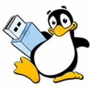

Création d'une Clé YUMI
Mission 7 — 1ère Année BTS SIO — Contexte IT Partner - Semestre 2
Toutes les missions
Création d'une Clé YUMI
En binôme, la mission principale était d'étudier et d'appliquer le principe de "Gestionnaire de mots de passe", puis de créer une clé bootable (YUMI) contenant différents exécutifs tels qu'une installation Windows, Debian, des outils de partitionnement et de clonage. Le but final était de vérifier si les actions sur ces exécutifs étaient possibles et comment.
📋 Cahier des charges — Gestionnaire de mots de passe
- Donner les sources de recherches
- Créer un document comparatif des gestionnaires
- Création de diaporama retraçant les recherches
- Tutoriel d'installation et d'utilisation du choix retenu
- Présentation orale
🔑 Cahier des charges — Clé YUMI
- Logiciel de test RAM et antivirus
- Exécutif Debian et installation Windows
- Logiciel de partitionnement et de clonage
- Tutoriel d'utilisation de tous les programmes
- Application pratique + planning du projet
🛠️ Tâches effectuées
- Fichier tutoriel retraçant les deux tâches
- Diaporama et document comparatif
- Prestation orale et application pratique
- Rendu du planning du projet

Points Forts
- ✅ Meilleure compréhension des outils de la clé bootable
- ✅ Aptitude à mieux se faire valoir à l'oral
- ✅ Capacité à documenter en général
Points Faibles
- ⚠️ Difficulté à cloner une image via Clonezilla
- ⚠️ Temps d'attente très long avec l'antivirus
- ⚠️ Difficulté à gérer le temps et les tâches
Avis Personnel
En prenant du recul sur les gestionnaires de mots de passe, j'ai compris que je n'en connaissais pas grand-chose. Quant à la clé YUMI bootable, c'était quelque chose de nouveau pour moi. Créer un tutoriel m'a fait comprendre un peu plus. Je trouve cette mission très instructive, surtout au niveau de la gestion de planning et du temps.